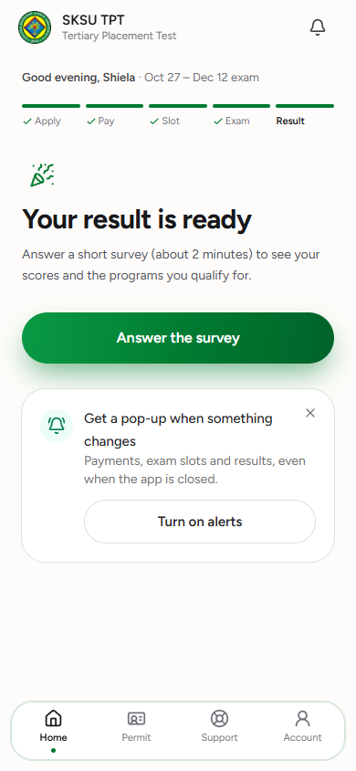
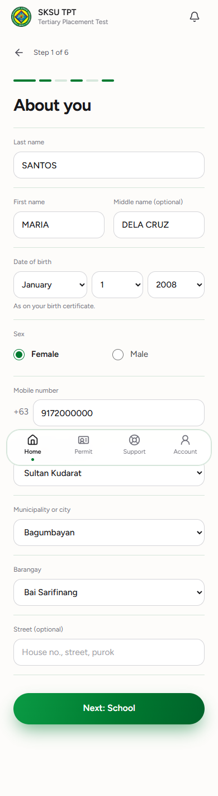
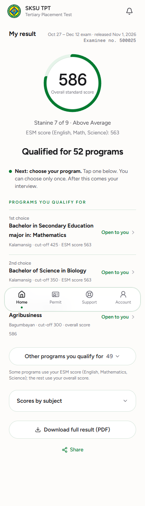

<title>Student App on Laptop</title>
<meta name="claude:viewport-fit-sides" content="cover">
<link rel="preconnect" href="https://fonts.googleapis.com">
<link rel="preconnect" href="https://fonts.gstatic.com" crossorigin>
<link href="https://fonts.googleapis.com/css2?family=Figtree:wght@400;500;600;700&display=swap" rel="stylesheet">
<style>
/* Mockup: the student app at laptop size. Menu on the left in place of the bottom bar, the main thing in the middle,
   "Your steps" and help on the right. Each laptop screen is drawn at 1280 px and scaled to fit; phone stays as it is. */
:root{
  --bg:#eef3ef; --page:#fbfcfb; --surface:#fff; --ink:#16181a; --text:#3f4542; --muted:#6b736f; --line:#e1e8e3;
  --brand:#0a6b38; --brand-2:#13924f; --mint:#e7f4ec; --gold:#e3b521; --font:"Figtree",system-ui,sans-serif;
}
@media (prefers-color-scheme:dark){:root:not([data-theme="light"]){--bg:#0d100e;--page:#121614;--surface:#181d1a;--ink:#f2f4f3;--text:#d2d7d4;--muted:#9aa39e;--line:#2a312d;--brand:#5fcf91;--brand-2:#3fb878;--mint:#1c2b22;--gold:#e3b521;color-scheme:dark}}
:root[data-theme="dark"]{--bg:#0d100e;--page:#121614;--surface:#181d1a;--ink:#f2f4f3;--text:#d2d7d4;--muted:#9aa39e;--line:#2a312d;--brand:#5fcf91;--brand-2:#3fb878;--mint:#1c2b22;--gold:#e3b521;color-scheme:dark}
*{box-sizing:border-box}
body{margin:0;background:var(--bg);color:var(--text);font:16px/1.65 var(--font);padding-block:32px 72px;padding-left:max(16px,env(safe-area-inset-left,0px));padding-right:max(16px,env(safe-area-inset-right,0px))}
main{max-width:1180px;margin:0 auto;display:flex;flex-direction:column;gap:56px}
h1{font-size:30px;line-height:1.2;color:var(--ink);margin:0;text-wrap:balance}
h2{font-size:21px;color:var(--ink);margin:0;text-wrap:balance}
.lead{color:var(--muted);margin:8px 0 0;max-width:68ch}
section{display:flex;flex-direction:column;gap:12px}
section>p{margin:0;max-width:68ch}
ul.points{margin:0;padding-left:20px;max-width:68ch}

/* Laptop frame: inner screen is 1280 wide, scaled by script to the box width. */
.laptop{border:1px solid var(--line);border-radius:14px;background:var(--surface);padding:8px;overflow:hidden}
.scaler{position:relative;width:100%;overflow:hidden}
.screen{width:1280px;transform-origin:0 0;position:absolute;top:0;left:0;background:var(--page);border-radius:8px;overflow:hidden}
.bar{height:58px;background:var(--brand);border-bottom:3px solid var(--gold);display:flex;align-items:center;gap:12px;padding:0 28px;color:#fff}
.logo{width:34px;height:34px;border-radius:50%;background:radial-gradient(circle at 50% 50%,#f4d34a 0 30%,#1d7a3f 31% 60%,#f4d34a 61% 66%,#0a5a2d 67%)}
.bar b{font-size:16px}.bar small{display:block;font-size:12px;opacity:.8;margin-top:-4px}
.bar .bell{margin-left:auto;width:22px;height:22px;border:2px solid #fff;border-radius:50% 50% 4px 4px;opacity:.9}
.app{display:grid;grid-template-columns:232px 1fr 300px;min-height:740px}
.side{border-right:1px solid var(--line);padding:28px 16px;display:flex;flex-direction:column;gap:4px}
.side a{display:flex;align-items:center;gap:12px;padding:10px 14px;border-radius:12px;color:var(--text);text-decoration:none;font-weight:500;font-size:15px}
.side a.on{background:var(--mint);color:var(--brand);font-weight:600}
.ico{width:18px;height:18px;border:2px solid currentColor;border-radius:5px;opacity:.85}
.side .me{margin-top:auto;padding:14px;border-top:1px solid var(--line);font-size:13px;color:var(--muted)}
.side .me b{display:block;color:var(--ink);font-size:14px}
.content{padding:40px 56px;display:flex;flex-direction:column;gap:22px;max-width:760px}
.hello{font-size:14px;color:var(--muted)}.hello b{color:var(--ink)}
.big{font-size:36px;line-height:1.15;font-weight:700;color:var(--ink);margin:0}
.content p{margin:0;font-size:17px;max-width:56ch}
.btn{display:inline-flex;align-items:center;justify-content:center;height:52px;padding:0 32px;border-radius:999px;background:linear-gradient(90deg,var(--brand-2),var(--brand));color:#fff;font-weight:600;font-size:16px;width:max-content;box-shadow:0 8px 20px -10px var(--brand)}
.ghost{display:inline-flex;align-items:center;height:46px;padding:0 22px;border-radius:999px;border:1px solid var(--line);color:var(--ink);font-weight:500;background:var(--surface)}
.rows{border-top:1px solid var(--line)}
.row{display:flex;justify-content:space-between;gap:16px;padding:14px 0;border-bottom:1px solid var(--line);font-size:15px}
.row span{color:var(--muted)}.row b{color:var(--ink);font-weight:600}
.rail{border-left:1px solid var(--line);padding:40px 28px;display:flex;flex-direction:column;gap:28px}
.rail h3{font-size:12px;letter-spacing:.08em;text-transform:uppercase;color:var(--brand);margin:0 0 10px}
.steps{list-style:none;margin:0;padding:0;display:flex;flex-direction:column}
.steps li{display:grid;grid-template-columns:22px 1fr;gap:12px;padding:8px 0;font-size:15px;position:relative}
.dot{width:20px;height:20px;border-radius:50%;border:2px solid var(--line);background:var(--surface);margin-top:3px}
.done .dot{background:var(--brand);border-color:var(--brand)}
.now .dot{border-color:var(--brand);box-shadow:0 0 0 4px var(--mint)}
.steps small{display:block;color:var(--muted);font-size:13px}
.now b{color:var(--brand)}
.help{font-size:14px;color:var(--muted)}.help a{color:var(--brand);font-weight:600;text-decoration:none}

/* apply */
.progress{display:flex;gap:6px}.progress i{flex:1;height:5px;border-radius:3px;background:var(--line)}.progress i.d{background:var(--brand)}
.field{display:flex;flex-direction:column;gap:6px}.field label{font-size:14px;color:var(--muted)}
.input{height:50px;border:1px solid #cfe0d5;border-radius:14px;background:var(--surface);padding:0 16px;display:flex;align-items:center;color:var(--ink)}
.two{display:grid;grid-template-columns:1fr 1fr;gap:18px}
.drop{height:150px;border:1.5px dashed #c7d8cd;border-radius:16px;display:grid;place-items:center;color:var(--muted);font-size:15px}
.saved{font-size:13px;color:var(--brand)}

/* result */
.res{display:grid;grid-template-columns:260px 1fr;gap:36px;align-items:start}
.ring{width:220px;height:220px;border-radius:50%;background:conic-gradient(var(--brand) 0 74%,var(--mint) 74% 100%);display:grid;place-items:center}
.ring div{width:184px;height:184px;border-radius:50%;background:var(--page);display:grid;place-items:center;text-align:center}
.ring b{font-size:52px;color:var(--ink);line-height:1}.ring small{font-size:13px;color:var(--muted)}
.prog{display:flex;justify-content:space-between;align-items:center;gap:16px;padding:14px 0;border-bottom:1px solid var(--line)}
.prog small{display:block;color:var(--muted);font-size:13px}.prog b{color:var(--ink);font-size:15px}
.open{color:var(--brand);font-weight:600;font-size:14px;white-space:nowrap}

/* comparison */
.pair{display:grid;grid-template-columns:1fr 300px;gap:24px;align-items:start}
.phone{background:var(--surface);border:1px solid var(--line);border-radius:22px;padding:8px;max-height:620px;overflow:auto}
.phone img{display:block;width:100%;border-radius:15px}
.cap{font-size:14px;color:var(--muted);margin-top:8px}
@media (max-width:820px){.pair{grid-template-columns:1fr}.phone{max-width:300px}}
@media (max-width:520px){h1{font-size:25px}}
</style>
<main>
<header>
  <h1>Student app on a laptop</h1>
  <p class="lead">Today a student on a PC sees the phone app as a narrow column in the middle of the screen. This mockup shows a laptop layout: the menu moves to the left, the main thing stays in the middle with room to breathe, and the right side shows their steps and where to get help. The phone app does not change.</p>
</header>

<section>
  <h2>1 · Home</h2>
  <ul class="points">
    <li>The bottom bar becomes a menu on the left: Home, Permit, Support, Notifications, Account.</li>
    <li>The middle says the one thing to do now, with the same big green button as on the phone.</li>
    <li>On the right, "Your steps" shows the whole journey at once, so nobody wonders what comes next.</li>
  </ul>
  <div class="pair">
    <div class="laptop"><div class="scaler" data-h="800"><div class="screen">
      <div class="bar"><span class="logo"></span><div><b>SKSU TPT</b><small>Tertiary Placement Test</small></div><span class="bell"></span></div>
      <div class="app">
        <nav class="side">
          <a class="on"><span class="ico"></span>Home</a><a><span class="ico"></span>Permit</a><a><span class="ico"></span>Support</a><a><span class="ico"></span>Notifications</a><a><span class="ico"></span>Account</a>
          <div class="me"><b>Shiela Dela Cruz</b>Examinee no. 500025</div>
        </nav>
        <div class="content">
          <div class="hello"><b>Good evening, Shiela</b> · Oct 27 – Dec 12 exam</div>
          <h3 class="big">Your result is ready</h3>
          <p>Answer a short survey (about 2 minutes) to see your scores and the programs you qualify for.</p>
          <span class="btn">Answer the survey</span>
          <div class="rows" style="margin-top:12px">
            <div class="row"><span>Exam</span><b>Sat, Nov 28 · ACCESS Campus, Room 204</b></div>
            <div class="row"><span>Results released</span><b>Mon, Dec 14</b></div>
            <div class="row"><span>Application code</span><b>TPT-27-4K8Q</b></div>
          </div>
        </div>
        <aside class="rail">
          <div><h3>Your steps</h3>
            <ol class="steps">
              <li class="done"><span class="dot"></span><div>Apply<small>Sent Oct 30</small></div></li>
              <li class="done"><span class="dot"></span><div>Pay<small>Checked Oct 31</small></div></li>
              <li class="done"><span class="dot"></span><div>Exam slot<small>Nov 28, Room 204</small></div></li>
              <li class="done"><span class="dot"></span><div>Exam<small>You came in</small></div></li>
              <li class="now"><span class="dot"></span><div><b>Result</b><small>Ready: survey first</small></div></li>
            </ol></div>
          <div class="help"><h3>Need help?</h3>Ask the Guidance and Testing Center in <a>Support</a>. Most answers come the same day.</div>
        </aside>
      </div>
    </div></div></div>
    <figure style="margin:0"><div class="phone"></div><div class="cap">Phone: unchanged</div></figure>
  </div>
</section>

<section>
  <h2>2 · Applying</h2>
  <ul class="points">
    <li>The form sits in a comfortable column, with short fields side by side (birth date and sex, town and barangay).</li>
    <li>On the right, the six steps show which are done, and "Saved" confirms their typing is kept.</li>
  </ul>
  <div class="pair">
    <div class="laptop"><div class="scaler" data-h="800"><div class="screen">
      <div class="bar"><span class="logo"></span><div><b>SKSU TPT</b><small>Tertiary Placement Test</small></div><span class="bell"></span></div>
      <div class="app">
        <nav class="side">
          <a class="on"><span class="ico"></span>Home</a><a><span class="ico"></span>Permit</a><a><span class="ico"></span>Support</a><a><span class="ico"></span>Notifications</a><a><span class="ico"></span>Account</a>
          <div class="me"><b>Juan Santos</b>Application started</div>
        </nav>
        <div class="content">
          <div class="hello">Step 1 of 6</div>
          <div class="progress"><i class="d"></i><i></i><i></i><i></i><i></i><i></i></div>
          <h3 class="big">About you</h3>
          <div class="two">
            <div class="field"><label>Last name</label><div class="input">Santos</div></div>
            <div class="field"><label>First name</label><div class="input">Juan</div></div>
            <div class="field"><label>Birth date</label><div class="input">May 12, 2009</div></div>
            <div class="field"><label>Sex</label><div class="input">Male</div></div>
            <div class="field"><label>Mobile number</label><div class="input">0917 123 4567</div></div>
            <div class="field"><label>Town or city</label><div class="input">Tacurong City</div></div>
          </div>
          <div style="display:flex;align-items:center;gap:18px"><span class="btn">Next: School</span><span class="saved">Saved</span></div>
        </div>
        <aside class="rail">
          <div><h3>Your application</h3>
            <ol class="steps">
              <li class="now"><span class="dot"></span><div><b>About you</b><small>Now</small></div></li>
              <li><span class="dot"></span><div>School</div></li>
              <li><span class="dot"></span><div>Programs</div></li>
              <li><span class="dot"></span><div>2×2 photo</div></li>
              <li><span class="dot"></span><div>Payment and receipt</div></li>
              <li><span class="dot"></span><div>Review and submit</div></li>
            </ol></div>
          <div class="help"><h3>Good to know</h3>Your typing is saved as you go. You can finish on your phone later with the same Google account.</div>
        </aside>
      </div>
    </div></div></div>
    <figure style="margin:0"><div class="phone"></div><div class="cap">Phone: unchanged</div></figure>
  </div>
</section>

<section>
  <h2>3 · Result</h2>
  <ul class="points">
    <li>The score and the programs sit side by side, so the whole result fits on one screen.</li>
    <li>Download PDF and Share stay right under the score.</li>
  </ul>
  <div class="pair">
    <div class="laptop"><div class="scaler" data-h="800"><div class="screen">
      <div class="bar"><span class="logo"></span><div><b>SKSU TPT</b><small>Tertiary Placement Test</small></div><span class="bell"></span></div>
      <div class="app" style="grid-template-columns:232px 1fr">
        <nav class="side">
          <a class="on"><span class="ico"></span>Home</a><a><span class="ico"></span>Permit</a><a><span class="ico"></span>Support</a><a><span class="ico"></span>Notifications</a><a><span class="ico"></span>Account</a>
          <div class="me"><b>Shiela Dela Cruz</b>Examinee no. 500025</div>
        </nav>
        <div class="content" style="max-width:none;padding-right:64px">
          <div class="hello"><b>My result</b> · Oct 27 – Dec 12 exam · released Dec 14</div>
          <div class="res">
            <div style="display:flex;flex-direction:column;gap:14px;align-items:center;text-align:center">
              <div class="ring"><div><span><b>586</b><br><small>Overall standard score</small></span></div></div>
              <div style="font-size:15px">Stanine 7 of 9 · Above Average<br><span style="color:var(--muted)">ESM score: 563</span></div>
              <span class="ghost">Download result (PDF)</span>
              <span class="open">Share</span>
            </div>
            <div style="display:flex;flex-direction:column;gap:14px">
              <h3 class="big" style="font-size:30px">Qualified for 52 programs</h3>
              <p style="font-size:16px"><b style="color:var(--ink)">Next: choose your program.</b> Tap one below. You can choose only once. After this comes your interview.</p>
              <div>
                <div class="prog"><div><small>1st choice</small><b>BSEd major in Mathematics</b><small>Kalamansig · cut-off 425 · ESM 563</small></div><span class="open">Open to you ›</span></div>
                <div class="prog"><div><small>2nd choice</small><b>BS Biology</b><small>Kalamansig · cut-off 350 · ESM 563</small></div><span class="open">Open to you ›</span></div>
                <div class="prog"><div><small>3rd choice</small><b>BS Agribusiness</b><small>Bagumbayan · cut-off 300 · overall 586</small></div><span class="open">Open to you ›</span></div>
              </div>
              <span class="ghost" style="width:max-content">Other programs you qualify for · 49</span>
            </div>
          </div>
        </div>
      </div>
    </div></div></div>
    <figure style="margin:0"><div class="phone"></div><div class="cap">Phone: unchanged</div></figure>
  </div>
</section>

<section>
  <h2>How it works</h2>
  <ul class="points">
    <li>Same pages and same buttons: only the frame around them changes from about 1024 px wide and up. Tablets and phones keep the bottom bar.</li>
    <li>Permit, Support, Account and the survey get the same left menu, with the content in the middle column.</li>
    <li>Nothing new to learn for staff; the manual's student guide gets laptop pictures once this is approved.</li>
  </ul>
</section>
</main>
<script>
// Scale each 1280 px laptop screen to its box, keeping the 16:10 feel.
function fit(){document.querySelectorAll('.scaler').forEach(function(s){var scr=s.firstElementChild;var k=s.clientWidth/1280;scr.style.transform='scale('+k+')';s.style.height=(Number(s.dataset.h)*k)+'px';});}
window.addEventListener('resize',fit);fit();
</script>
